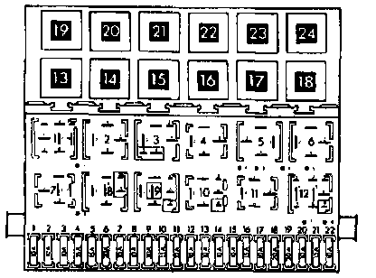

Daytime Running Lamp Relay: Testing and Inspection
If the daytime running light relay (-J90-) is noisy on vehicles from VIN: 3VWFP01H7PM013696 (Canada only), install insulator Part No. 1HM 963 571 over the relay.NOTE: Part numbers are for reference only. Always check with a VW Parts Department for the latest parts information.

-J90- is stamped with production control number 25 and is located on the fuse relay panel.
- Gasoline engine vehicles - relay position 23
- Diesel engine vehicles - relay position 19